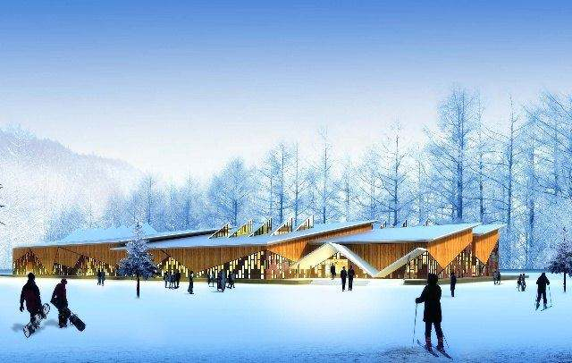
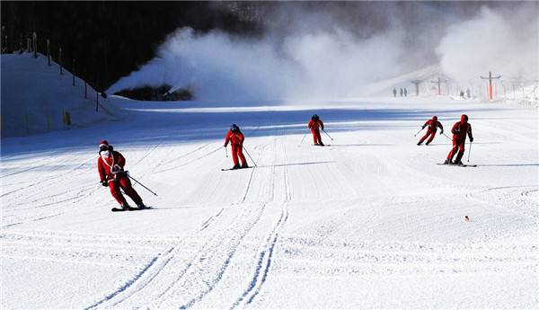

美林谷滑雪场位于承德以北内蒙赤峰喀喇沁的美林谷运动休闲度假区内，距赤峰110公里，座落于宁城县、河北隆化县、围场县交汇之处。 中文名称 美林谷滑雪场 地理位置 承德以北内蒙赤峰喀喇沁的美林谷运动休闲度假区内 景点介绍 美林谷滑雪场位于承德以北内蒙赤峰喀喇沁的美林谷运动休闲度假区内，距赤峰110公里，座落于宁城县、河北隆化县、围场县交汇之处。旅游项目共分为滑雪场、度假酒店等，是一个浪漫的滑雪度假旅游天堂，被誉为“东方雪源圣地”滑雪场以打造“欧式滑雪小镇”为开发理念，由著名的法国团队设计，三期70公里雪道全部建成后，将成为亚洲最大的国际滑雪场。 特色活动：caving道、mogo道、单板公园、双板公园以及雪地摩托、雪上飞碟、雪圈、雪橇、雪地自行车、雪雕景观、冰上曲棍球、KTV、SPA等多种雪地娱乐项目
注意事项 1、检查雪具是否完整:雪鞋、雪板、雪杖,是否完整并配套.\n2、滑雪基本姿势:双膝微曲.眼自然平视远方而不要盯着自己的雪板尖看.重心向前而不要向后,小腿要向前用力压紧雪靴.双手握雪杖向前举起,双肘微曲.初学者不要把手套在杖柄的绳套内.\n3、应急措施:当滑雪摔倒时,最重要的是要收颔近胸以防后脑受击.其次是要放松肢体,僵直的身体更容易受伤.最后是不要硬撑,一旦失去重心,初学者不要试图重新取得控制,还是任由摔倒不易受伤.摔倒爬起时建议初学者脱下雪板,站起后再装上雪板.记住站立时雪板要和雪道垂直.\n建议在当地聘请专业的滑雪教练,既可以保证安全还可以尽快掌握滑雪技能.\n4、当不滑雪的时候,务必不要站在滑雪道上.\n5、滑雪时"最好轻装上陈"贵重物品、现金、首饰、手机等最好不要带在身上.\n6、最好带隐形眼镜滑雪,外戴"滑雪镜"可自带也可到滑雪场内商店购买.(无租用处)\n7、冬季气候寒冷,应注意以下方面:\n(1)保暖:防寒服、雪地鞋、帽、手套请勿必带上,也可到滑雪场内商店购买,(无租用处)\n(2)护肤:准备油性较大的脂类护肤品,防止干燥、皱裂;\n(3)护眼:准备太阳镜,防止雪地反射光刺眼,伤眼;\n(4) 防滑:冰雪路面上行走,膝盖微屈,重心向前,小步行走;\n(5) 禁烟:登山或滑雪,山林中禁忌烟火.\n(6) 药物:特别是感冒药,是东北之行的必备药物.\n(7) 相机:在寒冷的条件下,相机容易失灵,所以在室外一定要注意相机的保暖.从室外进入室内,切记将相机用厚布包好,或放入胶袋内保护,否则因室内外温差太大,相机会出现"反霜"现象(整部相机出满水珠)\n(8) 胶卷:胶卷受冻后脆性很大,因此在室外拉动胶卷时,不要用力过大,否则,胶卷会容易被拉断.\n(9)电池:因为相机里的电池无法抵御低温,相机往往无法正常拍照,你应该在贴身口袋里多带一节电池备用,经常把有温度的电池装进相机.\n建议滑雪时,可以自带一些巧克力之类的零食
